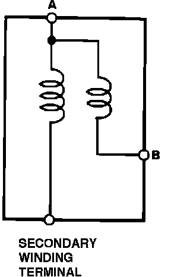
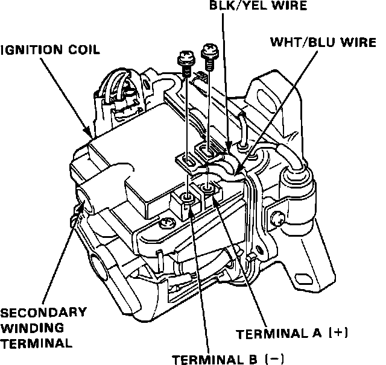

Ignition Coil: Testing and Inspection
Ignition Coil Circuit:

NOTE: Resistance will vary with the coil temperature; specifications are at 70°F (20°C).
1. With the ignition switch OFF, remove the distributor cap.
Ignition Coil Test:

2. Remove the 2 screws to disconnect the BLK/YEL and WHT/BLU wires from the terminals A(+) and B(-) respectively.
3. Using an ohmmeter, measure the resistance of the primary winding between the A and B terminals. Replace the coil if the resistance is not within specifications.
Resistance: 0.6 - 0.8 ohms
4. Using an ohmmeter, measure the resistance of the secondary winding between the A and secondary winding terminals. Replace the coil if the resistance is not within specifications.
Resistance: 9,760 - 14,640 ohms